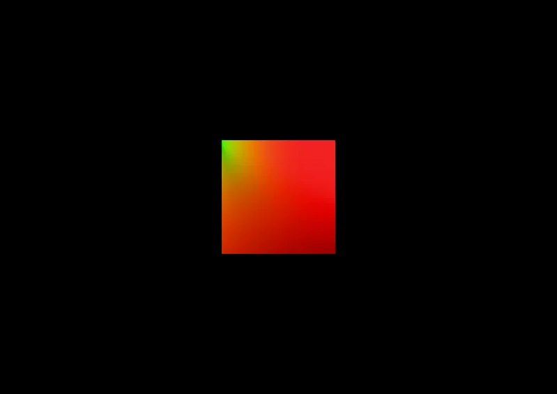

3D Lighting & Environment SkyBox & IBL IBL
BRDF LUT Test (Dev Only) - RedGPU WebGPU Example
Verifies BRDF LUT texture generation for IBL specular reflections.
IBL 스페큘러 반사 연산을 위한 BRDF LUT 텍스처 생성을 검증합니다.

3D Lighting & Environment SkyBox & IBL IBL
Verifies BRDF LUT texture generation for IBL specular reflections.
IBL 스페큘러 반사 연산을 위한 BRDF LUT 텍스처 생성을 검증합니다.
